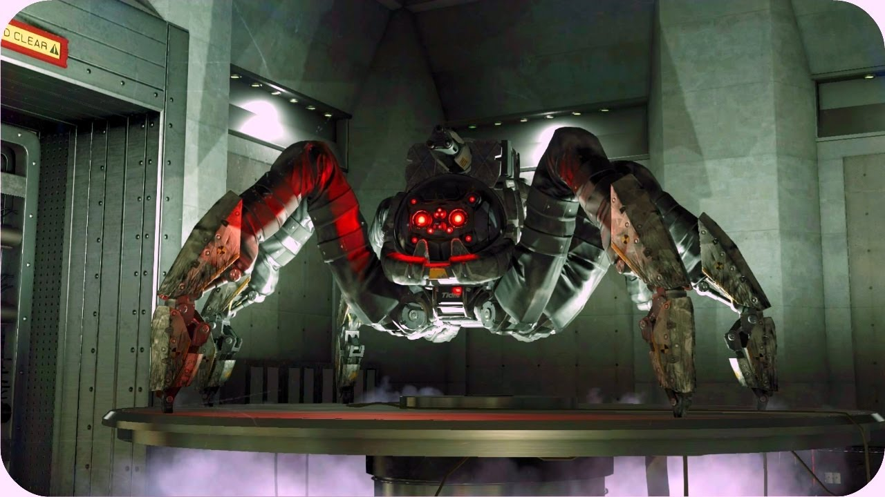

Campaign
The Big Picture
The enemy here is Blume, which is a company that is focused on making life as modern as possible, with smart fridges that can make you a grocery list, smart toilets, smart TV's. the works. They do it thorugh a system called CtOS, which keeps tabs on every citizen in San Francisco and monitors them to collect preferences in order to make life convenient.
However, DedSec see the problem in this plan, and realize how Blume could be using this as an excuse to spy on people, and so they want to shut Blume down. But that's no easy task, as Blume is partnered with Tidis Corp, the world's foremost security firm.
Tidis
Tidis is a security firm. They are testing robots that are meant to replace human soldiers in the battlefield, because robots have superior reflexes, strength, and accuracy. They are testing robots that have improvised riot gear, machine guns, and a spider-tank, which basically crushes everything with its legs. DedSec are worried that this could get into
the wrong hands, and if it were let onto the streets, while still in beta or reprogrammed to do harm, it would be a disaster. So DedSec wants to shut down the robot program.
